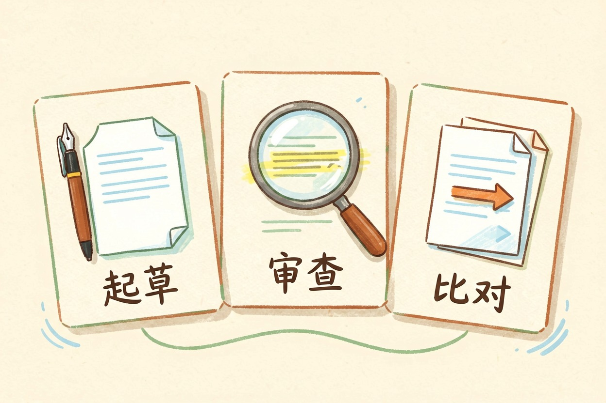
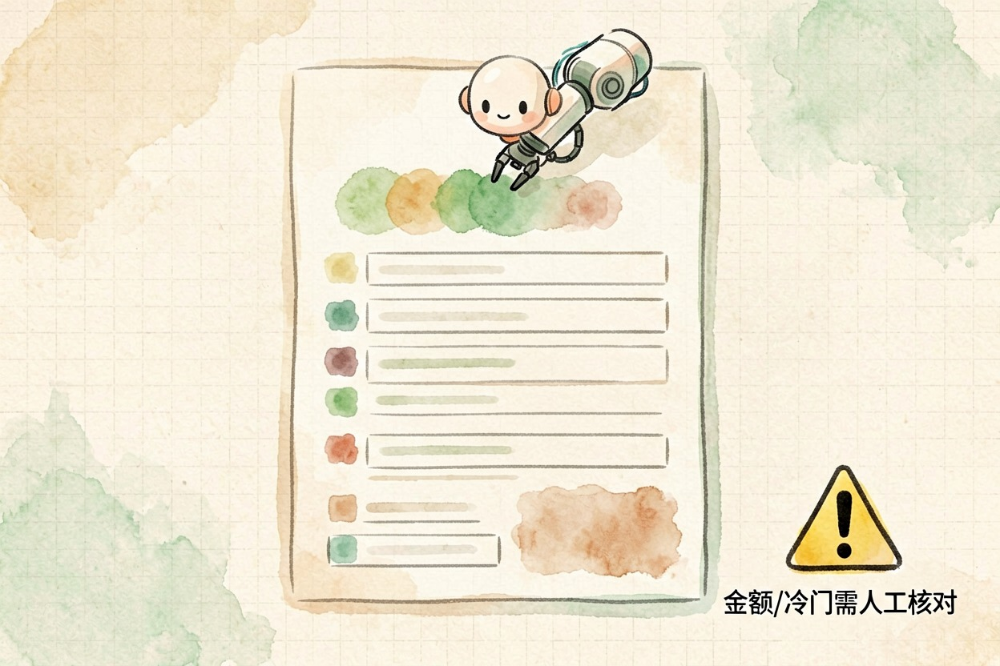
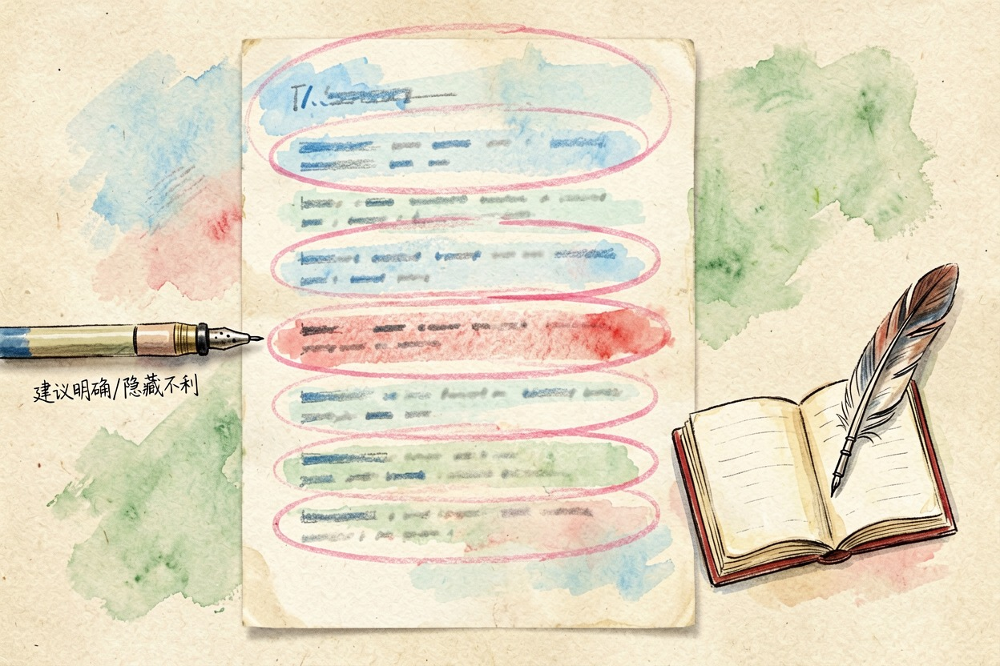
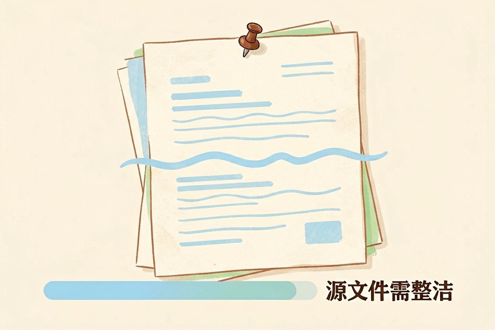

AI 合同工具靠谱吗？能力边界的实测结论 — Learntide
合同工具宣传得天花乱坠，真用起来却常翻车。看清它能替代什么、替代不了什么，才不会花冤枉钱。
ai合同工具靠谱吗？先看它替你做了哪几步

AI 合同工具靠谱吗？先给结论：它能替代重复劳动，替代不了专业判断。这是看待这类产品的底线。
市面上的工具大致三类。一类做起草，给你合同初稿。一类做审查，帮你标风险点。还有一类做比对，把两份合同拉在一起看差异。
它们共同的长处，是把格式和条款快速铺开。你省下的是排版和查找的时间。
想判断一个工具行不行，先看清它替你做了哪几步。是只排版，还是真在读条款，差别很大。别被演示视频骗了。演示都是挑好的 cases，真实合同才见真章。
起草类工具的实测表现

起草类工具，套模板很熟。你填要素，它出文档，速度快。常见协议它都见过。
但遇到冷门交易，它就露怯。结构可能错，条款可能漏。你若不懂行，很难发现。
它对金额的敏感度低。你写错一个数字，它照单全收。这种错只能人来查。它能记住你常用的条款偏好。养成后，初稿越来越合你的口味。
实测里，十份常见协议有八份能直接用框架。剩下两份要大改。这个比例可以参考。
审查类工具的实测表现

审查类工具，标风险点快。它能在几秒里扫完几十页，列出可疑条款。
可它常误报。把正常的保护性条款也标红，你得一条条回看。
它也看不出整体偏向。单条都合理，合起来不利你，它未必点破。这要人通读。审查工具对中文合同支持参差。先拿你自己的合同试，别信宣传。
想快速试一个审查工具，可以把下面这段当探针。
请审这一条："乙方应在合理时间内交付。"
只回答两个问题：
1. 这一条对甲方有哪些隐藏不利？
2. "合理时间"若写进合同，争议时谁吃亏？
不要给套话，要具体。它答得越具体，说明读得越深。只回"建议明确"的，能力有限。
比对类工具的适用场景

比对类工具最实用。两份合同哪里不同，它标得准。适合审修改稿、看补充协议的变动。
它胜在稳，不发挥。只做差异，不替你下结论。这类功能返工少。
但要注意版本。源文件格式乱，它比对就歪。上传前先整理干净。比对时留心格式。扫描件转出来的文字常有错，会带偏结果。它帮你看清"对方偷偷改了哪一句"。这种事人工盯很容易漏。
怎么判断一个工具值不值得用
看它敢不敢标出来源。好工具会引用原文，让你核对。只给结论不给依据的，少信。
看它覆盖的合同类型。你常写的它都支持，才值。冷门的也要会处理。
看它会不会过度承诺。凡说"替代律师"的，基本夸大。合同事关重大，谨慎为上。价格也要算。贵的不一定强，先试用再决定，别冲动下单。
最后记住，ai合同工具靠谱吗 没有一概而论的答法。工具帮你提速，但别把签字前的把关也交给它。 !尾图核心要点回顾
{kind=link}
本文信息核对于 2026-08-08。AI 产品的价格、免费额度与功能变动频繁，实际以各工具官网当前说明为准。